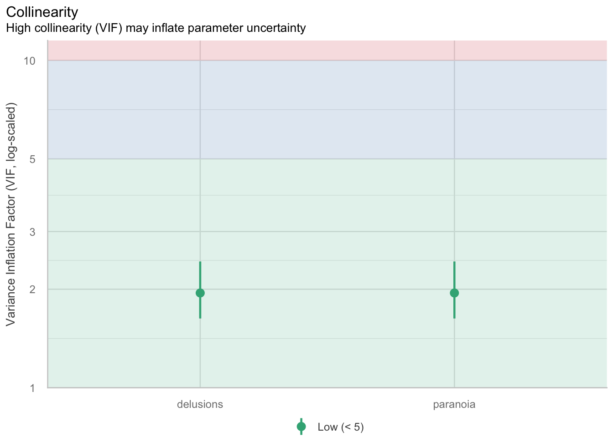
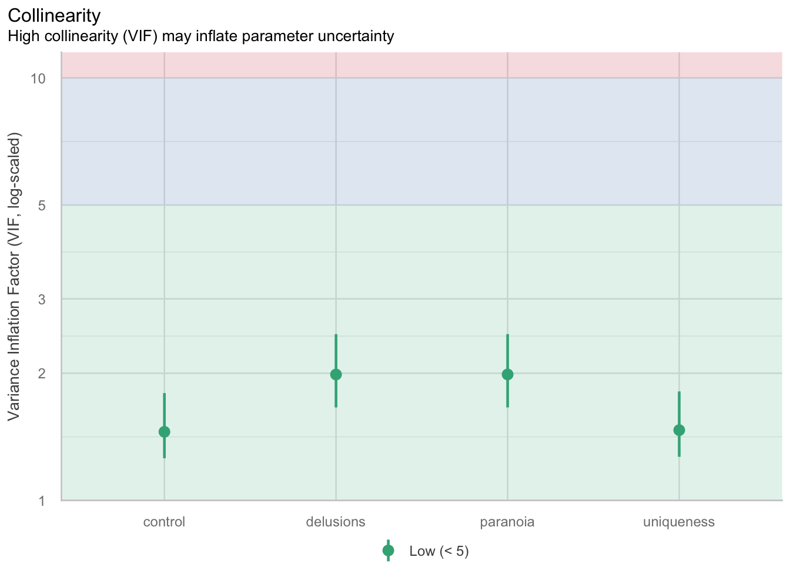

Warning: package 'ggplot2' was built under R version 4.5.2Module 4: Homework Starter File KEY
Homework Note
You must answer ALL questions and follow ALL steps in the homework instructions!
Load Packages
Read in the Data
The dataset we will use comes from data from Kay (2021). This paper examines why people believe in conspiracy theories.
The data is called data_kay2021.csv. Read in the data using the read_csv() function. Name the data “kay2021”
Exercise 1:
Say a researcher is interested in whether there is a relationship between the tendency to believe in conspiracy theories (Y = conspiracy) and paranoia (X1 = paranoia) when controlling for person’s general tendency to have delusions (X2 = delusions).
Calculate and report the partial correlations for this scenario. For this exercise, your report can be as simple as: “The partial correlation is XXX.”
Explain the what partial correlation means.
partial_corr <- pcor.test(
x = kay2021$conspiracy, # Y (var of interest 1)
y = kay2021$paranoia, # X1 (var of interest 2)
z = kay2021$delusions # X2 (control variable)
)
partial_corr estimate p.value statistic n gp Method
1 0.1442244 0.04211763 2.045673 200 1 pearsonpartial_corr$estimate^2[1] 0.02080067Exercise 2:
We want to predict the tendency to believe in conspiracy theories (Y = conspiracy) from paranoia (X1 = paranoia) and delusional ideation (X2 = delusions). Take the following steps:
Run a regression predicting the tendency to believe in conspiracy theories (Y =
conspiracy) from paranoia (X1 =paranoia) and delusional ideation (X2 =delusions). Call itmodel_1.Write out your interpretations of the overall model (both R2 and the F-statistic) and each of the regression coefficients (\(\beta_0\), \(\beta_1\), and \(\beta_2\)).
Run regression diagnostics (i.e.,
check_collinaerity()) to look for potential multicollinaerity. Comment on what you find, but not need to try to correct anything.Provide an APA-style summary of your results (make sure it contains all necessary pieces, check lab for an example).
model_1 <- lm(conspiracy ~ paranoia + delusions, data = kay2021)
summary(model_1)
Call:
lm(formula = conspiracy ~ paranoia + delusions, data = kay2021)
Residuals:
Min 1Q Median 3Q Max
-1.84386 -0.43060 0.00069 0.41218 2.11093
Coefficients:
Estimate Std. Error t value Pr(>|t|)
(Intercept) 0.2862 0.2873 0.996 0.3203
paranoia 0.2635 0.1288 2.046 0.0421 *
delusions 0.6484 0.1282 5.058 9.69e-07 ***
---
Signif. codes: 0 '***' 0.001 '**' 0.01 '*' 0.05 '.' 0.1 ' ' 1
Residual standard error: 0.6869 on 197 degrees of freedom
Multiple R-squared: 0.3041, Adjusted R-squared: 0.297
F-statistic: 43.04 on 2 and 197 DF, p-value: 3.109e-16check_collinearity(model_1)# Check for Multicollinearity
Low Correlation
Term VIF VIF 95% CI adj. VIF Tolerance Tolerance 95% CI
paranoia 1.95 [1.63, 2.43] 1.40 0.51 [0.41, 0.61]
delusions 1.95 [1.63, 2.43] 1.40 0.51 [0.41, 0.61]plot(check_collinearity(model_1))
Exercise 3:
Treat the model you ran in Exercise 2 as Model 1. Make a new model, Model 2 (name is model_2), that includes all the predictors in Model 1 plus the desire for uniqueness (uniqueness) and the desire for control (control).
Perform a model comparison to test whether the variation in the tendency to believe in conspiracy theories is accounted for by a desire for uniqueness and control (TOGETHER, AS A SET) above and beyond the variation already accounted for by paranoia and delusional ideation.
Run a regression predicting the tendency to believe in conspiracy theories (Y =
conspiracy) from paranoia (X1 =paranoia), delusional ideation (X2 =delusions), desire for uniqueness (uniqueness) and the desire for control (control). Call itmodel_2.Write out your interpretations of the overall model (both R2 and the F-statistic) and each of the regression coefficients (\(\beta_0\), \(\beta_1\), and \(\beta_2\)).
Run regression diagnostics (i.e.,
check_collinaerity()) on Model 2 to look for potential multicollinaerity. Comment on what you find, but not need to try to correct anything.Conduct a model comparison between Model 1 and Model 2. Answer the question: Does Model 2 explain significantly more variance in the tendency to believe in conspiracy theories than Model 1?
Report the change in SSE between Model 1 and Model 2. Hint: we called this
ssrin lab.Provide an APA-style summary of your results (make sure it contains all necessary pieces, check lab for an example).
model_2 <- lm(conspiracy ~ paranoia + delusions + uniqueness + control, data = kay2021)
summary(model_2)
Call:
lm(formula = conspiracy ~ paranoia + delusions + uniqueness +
control, data = kay2021)
Residuals:
Min 1Q Median 3Q Max
-1.9222 -0.4435 0.0086 0.4028 1.9387
Coefficients:
Estimate Std. Error t value Pr(>|t|)
(Intercept) -1.0126 0.5991 -1.690 0.0926 .
paranoia 0.2719 0.1288 2.111 0.0360 *
delusions 0.6402 0.1282 4.995 1.3e-06 ***
uniqueness 0.1823 0.1753 1.040 0.2995
control 0.2207 0.1732 1.274 0.2041
---
Signif. codes: 0 '***' 0.001 '**' 0.01 '*' 0.05 '.' 0.1 ' ' 1
Residual standard error: 0.6799 on 195 degrees of freedom
Multiple R-squared: 0.3251, Adjusted R-squared: 0.3112
F-statistic: 23.48 on 4 and 195 DF, p-value: 7.343e-16check_collinearity(model_2)# Check for Multicollinearity
Low Correlation
Term VIF VIF 95% CI adj. VIF Tolerance Tolerance 95% CI
paranoia 1.99 [1.66, 2.48] 1.41 0.50 [0.40, 0.60]
delusions 1.99 [1.66, 2.47] 1.41 0.50 [0.40, 0.60]
uniqueness 1.47 [1.27, 1.81] 1.21 0.68 [0.55, 0.79]
control 1.45 [1.26, 1.79] 1.21 0.69 [0.56, 0.79]plot(check_collinearity(model_2))
anova(model_1, model_2)Analysis of Variance Table
Model 1: conspiracy ~ paranoia + delusions
Model 2: conspiracy ~ paranoia + delusions + uniqueness + control
Res.Df RSS Df Sum of Sq F Pr(>F)
1 197 92.938
2 195 90.131 2 2.8071 3.0366 0.05027 .
---
Signif. codes: 0 '***' 0.001 '**' 0.01 '*' 0.05 '.' 0.1 ' ' 1model_1_anova <- anova(model_1)
model_2_anova <- anova(model_2)
model_1_sse <- model_1_anova$`Sum Sq`[3]
model_2_sse <- model_2_anova$`Sum Sq`[5]
ssr <- model_1_sse - model_2_sse
ssr[1] 2.807082Render and submit your document.
Make sure that you I can see all of your answers in the rendered document!
To receive credit for this homework, submit a rendered PDF version of your file to “Module 4: Homework Submission” on Canvas.
- At the top of the .qmd file, change “format: html” to “format: pdf”
- Click “Render” at the top of the document
- Your document will open in a browser tab
- If your document opens in the “Viewer” pane, click the “sidebar” button (circled in image below).
- If you get a popup warning, click “Try Again” (may be specific to Mac)

- Click the “Save” icon on the top right (circled in the image below)

- Save wherever you keep your class documents and upload your file to Canvas